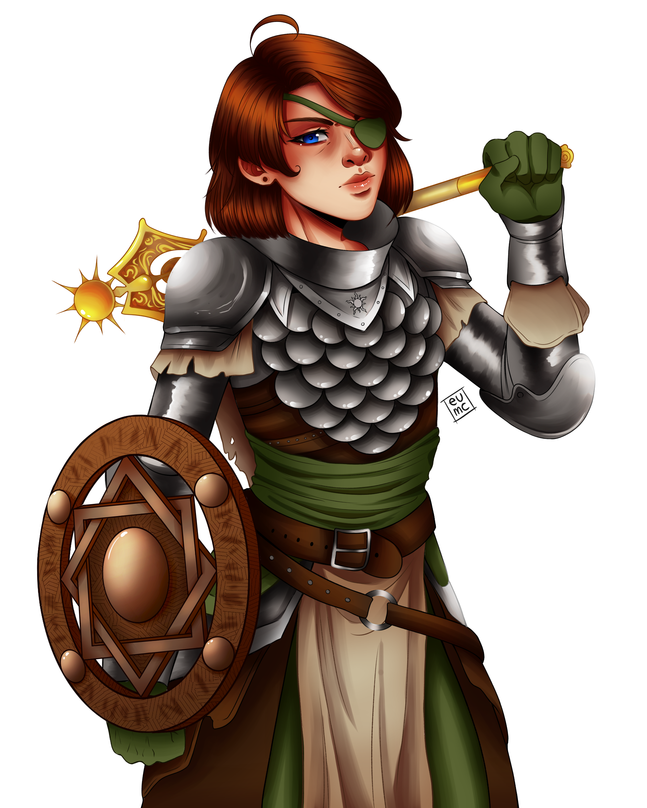
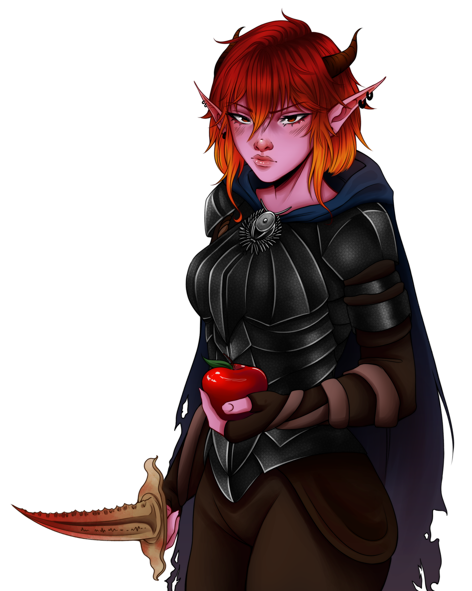

Makiza
Paladina da luz
Makiza é bondosa, calma e inteligente. Ela segue os ensinamentos de Pelor e procura aliviar o sofrimento de quem encontra.

Makiza é bondosa, calma e inteligente. Ela segue os ensinamentos de Pelor e procura aliviar o sofrimento de quem encontra.

Lizel é alegre, determinada e sorrateira. Embora tenha um coração enorme, não costuma olhar para trás quando rompe um vínculo.